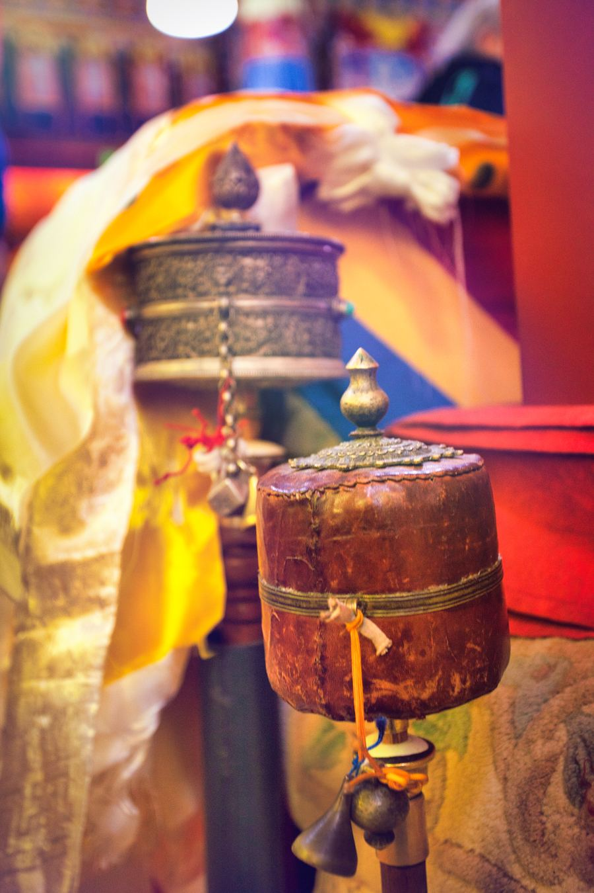
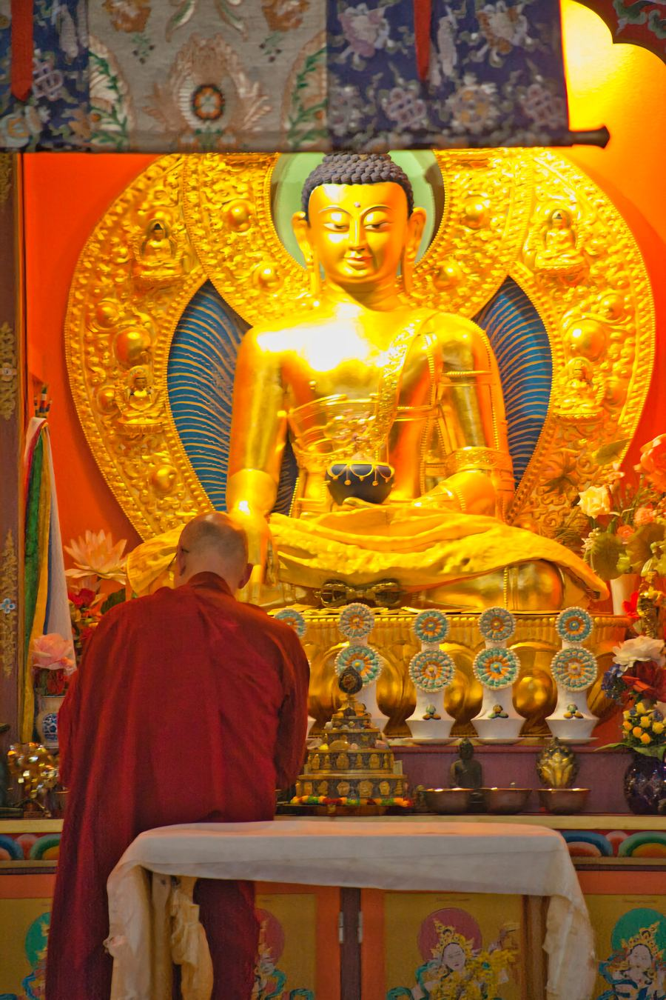

À venir
14 — 19 avril 2026
Retraite de méditation en Chartreuse
Chalet « Les Belles Ombres » — Ste Marie du Mont. Retraite sous la conduite de Lopön Thrinlé Tenzin, dans le massif de la Chartreuse.
S'inscrire →
Chalet « Les Belles Ombres » — Ste Marie du Mont. Retraite sous la conduite de Lopön Thrinlé Tenzin, dans le massif de la Chartreuse.
S'inscrire →
Centre Drukpa Plouray. Célébration du premier anniversaire de la venue des reliques du Bouddha à Plouray.
Nous contacter →
Les Tranchats, Dordogne — Drukpa Vendée. Retraite guidée par Lopön Thrinlé Tenzin.

Sessions de pratique intensive en groupe, guidées par Lopön Thrinlé Tenzin lors de ses venues trimestrielles à Grenoble.
Renseignements →